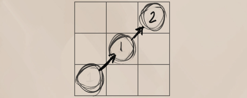
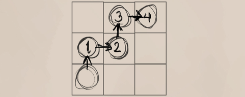
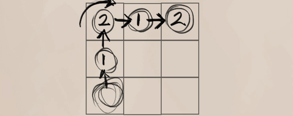
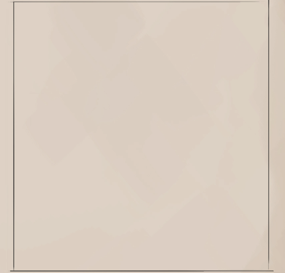
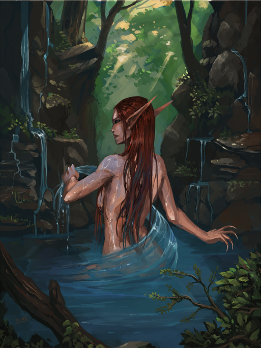

INTERACTIONS
A character's interaction with the world is shown by the use of actions, or simply put, “the things they may do”. These actions are split into three distinct categories, being the General actions, Skill actions and Combat actions.
ACTIONS
ACTION TYPES
Actions are how the character interacts with the world and encompass the following :
General Actions : These are actions that can be done at any time, such as drinking a potion, reading a scroll or speaking to another.
Skill Actions : These are general actions that have a chance of failure. Such actions are jumping over a cliff, acting out a play or disguising oneself.
Combat Actions : These actions can only be done while in combat or to begin combat such as swinging a sword or casting an offensive spell.
ACTION LENGTH
Any action takes a certain amount of time and while under stressful situations such as combat, characters are limited in the number of actions they may do in a given time. To easily categorize all actions, there are multiple categories of time lengths based upon turns and rounds.
If an action takes longer than a full turn's worth, it is carried over to that character's next turn.
Move Action : The base Move Action is given freely to all characters, no matter how slow their reaction speed.
Standard Actions : The most common action, most characters tend to have a single Standard Action per turn alongside their Move action.
Full Actions : Full actions are set as a static amount of time that doesn't change no matter how quick the character is. These ALWAYS take a full round and the character's full attention.
Swift Actions : These actions are quick but still take up enough time that they cannot be done except on the turn of the character. These actions may be done alongside a standard or move action.
Immediate Actions : Immediate Actions are so impressively fast that they may be done during another creature's turn. Immediate actions often need to be prepared ahead of time.
THE TELLING ACTION
Tian watched as Uru tested her now healed sinuous tail, its fins cresting the waters of the large pond. The lightest smile etched his face as he contemplated her movements with his usual studious nature. It was obvious that the pond was too small for the siren, but it didn't stop her from moving with the grace of her oceanic predatory kind. His eyes sharpened as he caught the glimpse of her sharpened teeth beneath the tattooed line.
Suddenly a flick of the creature's hips rippling through to the end of her tail and a wave of droplets was flying towards him, the thresher siren giving him a mischevious grin.
Taking a quick breath, Tian exhaled and let his martial subconcious take over. His hand and arm became a blur as they lightly touched each droplet of water ever so gently as to divert them to either side of his body.
Uru pouted and huffed, speaking in a broken tongue. “How were you ready for that?”
"Every action has a tell before it occurs.” replied the monk with his usual serenity, “Yours was your smile.”
INTERACTIONS
COMMON ACTIONS
| ACTION | LENGTH | DESCRIPTION |
|---|---|---|
| Discussing | The character speaks to another without interruptions or distractions. (both characters cannot be under duress.) | |
| Speaking | Full Action | The character relays an established thought to another within a short time frame. This can be done as a free action while moving. |
| Quick Shout/Yell | Free/Immediate Action | The character relays a few words or a command. Maximum once per round. This does not allow a conversation. |
| Moving | 1 Standard/Move Action | The character runs/climbs/swims their full movement length. |
| Guarded Move | 1 Swift Action | The character moves 1/5th (minimum 1) of their movement. This also safeguards them against any actions of opportunity. |
| Changing Direction | Immediate Action | The character quickly adjusts their facing. (Against flanking etc...) |
| Simple Interaction | 1 Swift Action | The character uses a common item, eats food, drinks a potion, opens a door or does any similar simple action. |
| Complex Interaction | 1+ Full Actions | The character uses an uncommon item such as a complex mechanical device or magical object that requires their full attention. |
| Reaching for a belted/pouched Item | 1 Standard Action | The character grabs hold of an easily accessible or pouched item. |
| Rummaging through a Backpack | 2 Standard Actions | The character ruffles through larger bags, looking for a particular item. |
| Dropping an Item | Swift Action | The character drops whatever they are holding to the ground. |
| Preparing a Simple Weapon | 1 Standard Action | The character draws a weapon from their back or side. |
| Preparing a Complex Weapon | 2 Standard Actions | The character prepares a weapon, such as reloading a crossbow or drawing a bow's string. |
| Attacking | 1 Standard Action | The character attacks either at melee or ranged with their Primary attacks. |
| Focused Attack | Swift Action | The character must do this alongside an Attacking action. The character adds all their Secondary attacks to the attack action. |
INTERACTIONS
MOVEMENT
Movement is the representation of how quickly a character moves through the world. The movement attribute is generally unused outside of dangerous situations or combat. While combat is active, movement is shown as 1 for each tile, with diagonals counting as 1 and a half. A character can move through these tiles at the rate of their chosen movement as long as they are not yet occupied or are of a small enough stature.
MANEUVERABILITY
This determines the ease of travel for the character upon different terrains.
Perfect : The character may move freely in any direction.
Good : The character cannot move in diagonals, but can turn direction in the same move action.
Rough : The character can only move in a straight line and must take a second move action to turn.
SPRINTING
A character may use two movement actions in a turn to sprint. If so used, they may add +1 to their total movement, with an additional +1 per 5 base movement speed.
SWIMMING/CLIMBING
Though swimming and climbing are skill actions, they are technically movement sub-sets as well. Characters who attempt to swim through deep waters or climb steep mountain-sides may do so only if they pass the skill check first.
FLYING
Characters that have a flying movement speed may use it instead of their running move. Their distance from the ground (moving “up”) counts as part of the movement as well and must be kept note of. Flight can only be used if the character is in their Light or lower lifting capacity. (See lifting capacity.)
FALLING
Falling is commonplace in areas of danger. Cliffs, traps, ravines and ledges are all obstacles where falling is possible. Falling penalties increase the further the distance fallen. The penalties of the fall can be reduced by a successful tumble skill action.
Light Fall : Falling dangers begin once the drop is greater than 2 tiles more than their height. The character then takes i lethal damage per further tile. The DC of the tumble is equal to the total number of tiles fallen.
Medium Fall : If a fall is greater than 5 tiles (+1 per size), then the character instead takes 2 lethal damage per distance fallen. The DC of the tumble is equal to the total number of tiles fallen.
Great Fall : If a fall is greater than 8 tiles (+1 per size), then the character takes 4 lethal damage per distance fallen. The DC of the tumble is equal to 2x the total number of tiles fallen
Size Difference : Creatures larger than medium size increase the total damage taken by 2 per size category. Creatures smaller than medium size decrease the total damage taken by i per size category.
BREATHING/HOLDING UNDERWATER
Most land species of Avorkath cannot breathe underwater, however may hold their breath a number of rounds equal to their constitution score + 1 per size smaller than medium. Afterwards, they take 1 lethal damage per round.
INTERACTIONS
SKILLS
Skills are predetermined actions that the character may do, although which require a certain amount of expertise. Unlike actions, there is a chance that the character's ability to perform these skills isn't good enough and that the character fails their attempt.
USING SKILLS
Skills function exactly as actions, with a certain amount of time allocated per skill. The difference lies in the chance of failure. Unlike an action which is simply declared, a skill must also be rolled. The roll is then checked against the difficuly check and the outcome decided.
DIFFICULTY CHECKS (DCs)
As with all dice rolls, to know if a skill was succesful, it must be rolled against a difficulty check. These are preset numbers that the skill value of the roll is used against. (See Dice Rolls)
MULTIPLE ABILITY SCORES
Should a skill benefit from multiple ability scores, the character chooses only one. These bonuses do not stack, and only the chosen ability score is used for the skill roll.
SKILL TYPES - NATURAL SKILLS
Natural skills are ones that relies more upon the character's natural inborn abilities. These skills aren't as heavily penalized for being untrained but don't get as much from mastery.
NATURAL SKILL VALUE Relevant Ability Score + Mastery Bonus - 2
SKILL TYPES - LEARNED SKILLS
Learned skills can also be attempted by any character (as long as they aren't complex), although without learning the intricacies the characterwill have a much tougher task ahead. Learned skills have a much heavier penalty untrained and relies upon mastery.
LEARNED SKILL VALUE Relevant Ability Score + Mastery Bonus - 5
SKILL TYPES - TRADE SKILLS
Trade skills are very similar to learned skills, however are always complex and can only be used if they have a mastery point within.TRADE SKILL VALUE Relevant Ability Score + Mastery Bonus - 3
SKILL TYPES - KNOWLEDGE SKILLS
While knowledge skills are much like learned skills for their penalty and mastery, they also further penalties depending on the character's upbringing, backstory and other knowledges.
KNOWLEDGE SKILL VALUE Relevant Ability Score + Mastery Bonus - 5
Knowledge - World : Knowledge skills are split into two categories and any point put into said race or region category allows the character to roll for any minor category included. These minor categories can also be further mastered. Characters start with their own race and region of growth automatically
Knowledge - Magic : Knowledge Magic is split into 5 major categories, or spheres of magic, each with specific sub-spheres. Having knowledge of magic does not give a character magical abilities, but can be used for knowing or using magical items.
COMPLEX SKILLS
Any skill marked as Complex are too intricate for lesser minds. A complex skill requires that the character be of intelligence 3 or more.
LIMITED SKILLS
Skills marked as limited aren't able to be nearly as enhanced and gain much less from any mastery. If so marked, limited skills reduce any mastery bonus by half, rounded down.
Bonus Text!
INTERACTIONS
NATURAL SKILLS
| Skill | Type- | Ability Scores | Action Length |
|---|---|---|---|
| Balance | - | Agi | Free/Immediate |
| Bluff | - | Wis/Cha | Standard |
| Charm | Limited | Bea | Swift |
| Climb | - | Str/Agi/Dex | Move |
| Hide | - | Dex/Ins | Standard |
| Intimidate | Limited | Str/Con/Cha | Swift |
| Inspire | Limited | Cha/Bea | Standard |
| Jump | Limited | Agi | Move |
| Listen | Limited | Ins | Free/Immediate |
| Move Silently | - | Agi/Dex/Ins | Move |
| Search | - | x Ins/Int/Wis | 10+ Full Turns |
| Sense Motive | - | Ins/Int/Wis | Immediate |
| Spot | Limited | Ins | Swift |
| Tumble | - | Agi | Move |
LEARNED SKILLS
| Skill | Type | Ability Scores | Action Length |
|---|---|---|---|
| Appraise | - | Ins/Int | 1+ Full Turn |
| Disable Device | Complex | Dex/Int | 5+ Full Turns |
| Disguise | - | Dex/Cha | 10+ Full Turns |
| Forage Food | - | Ins/Wis | 10+ Full Turns |
| Forge Copy | Complex | Dex/Int | 5+ Full Turns |
| Handle Animal | Complex | Ins/Wis | Standard |
| Heal | Complex | Int/Wis | Full Turn |
| Persuade | - | Cha | Full Turn |
| Pick Lock | Complex | Dex | Full Turn |
| Pick Pocket | Complex | Dex | Standard |
| Ride | - | Agi/Ins/Wis | Swift |
| Swim | - | Str/Agi | Move |
| Track | - | Ins/Int/Wis | Full Turn |
TRADE SKILLS
| Skill | Type | Ability Scores | Action Length |
|---|---|---|---|
| Cook | Complex | Dex/Int 5+ | Full Turn |
| Draw/Paint | Complex | Dex/Int 5+ | Full Turn |
| Fish | Complex | Dex/Int 5+ | Full Turn |
| Perform | |||
| - Act | Complex | Wis/Cha 5+ | Full Turns |
| - Dance (Wild) | - | Agi 5+ | Full Turns |
| - Dance (Court) | - | Cha 5+ | Full Turns |
| - Instrument | Complex | Dex/Cha 5+ | Full Turns |
| - Sing | - | Cha 5+ | Full Turns |
| - Speech | Complex | Cha 5+ | Full Turns |
| Smith | Complex | Dex 5+ | Full Turns |
| Stonework | Complex | Dex 5+ | Full Turns |
| Weave | Complex | Dex 5+ | Full Turns |
| Woodwork | Complex | Dex 5+ | Full Turns |
KNOWLEDGE SKILLS
| Skill | Type | Ability Scores | Action Length |
|---|---|---|---|
| Region (Area category) | |||
| - Nature | - | Ins/Int | Full Turn |
| - Geography | Complex | Int | Full Turn |
| - Politics | Complex | Int | Full Turn |
| - Myths | Complex | Int | Full Turn |
| - Factions | Complex | Int | Full Turn |
| - History | Complex | Int | Full Turn |
| - Religions | Complex | Int | Full Turn |
| Race (Type category) | |||
| - Politics | Complex | Int | Full Turn |
| - Myths | Complex | Int | Full Turn |
| - Factions | Complex | Int | Full Turn |
| - History | Complex | Int | Full Turn |
| - Religions | Complex | Int | Full Turn |
KNOWLEDGE SKILLS MAGIC SPHERES
| Skill | Type | Ability Scores | Action Length |
|---|---|---|---|
| Arcane | |||
| - Arcanum | Complex | Int | Full Turn |
| - Force | Complex | Int | Full Turn |
| - Illusion | Complex | Int | Full Turn |
| - Enchantment | Complex | Int | Full Turn |
| Elemental | |||
| - Fire | Complex | Ins/Int/Wis | Full Turn |
| - Water | Complex | Ins/Int/Wis | Full Turn |
| - Earth | Complex | Ins/Int/Wis | Full Turn |
| - Air | Complex | Ins/Int/Wis | Full Turn |
| Light | |||
| - Protection | Complex | Int/Wis | Full Turn |
| - Judgement | Complex | Int/Wis | Full Turn |
| - Restoration | Complex | Int/Wis | Full Turn |
| - Divination | Complex | Int/Wis | Full Turn |
| Distortion | |||
| - Nectomantic | Complex | Int | Full Turn |
| - Daemonic | Complex | Ins/Int/Wis | Full Turn |
| - Shadow | Complex | Int | Full Turn |
| - Blood | Complex | Int | Full Turn |
| Spirit | |||
| - Lunar | Complex | Ins/Wis | Full Turn |
| - Solar | Complex | Ins/Wis | Full Turn |
| - Fey | Complex | Ins/Wis | Full Turn |
| - Soul | Complex | Ins/Wis | Full Turn |
| - Plant | Complex | Ins/Wis | Full Turn |
| - Guidance | Complex | Ins/Wis | Full Turn |
INTERACTIONS
WILL STATE
A character's will is ever important, giving them the courage to stand up against their foes or the heart to resist the most dangerous of temptations. However, even the most hardened veterans may fall to the terrors or charms of battle and spells.
Charm/Fear Points : Whenever an effect says that the character gains a charm or fear point, they must refer to the fright and/or charm charts to see if any effect is yet placed on the character.
Charmed and Feared : Should a character be suffering a charm and fear effect at the same time, they must suffer the effect of whichever is greater at the moment. If they are tied, fear is the greater effect.
Regaining Sanity : Characters lose 1 fear and charm point per safe night's rest.
“Beware child of the female of the Sei’yuulei, first of the fae, known to us humans as Nymphs. Their graceful allure is used to its full advantage when hunting any who would trespass their lakes, rivers and forests uninvited.” - The Chronicler
FEAR STATES AND EFFECTS (Effects do not stack)
| Points | State | Effect |
|---|---|---|
| 3 | Frightened | -1 Initiative, -1 to all Attack and Skill values. |
| 6 | Scared | -1 Dodge, -3 Initiative, -2 to all Attack and Skill values. |
| 9 | Terrified | Halve Movement, -2 Dodge, -5. Initiative, -3 to all Attack and Skill values. Roll a die on each action. On a 4+, the action goes through. |
| 12 | Panicking | Same as Terrified, but actions on Same as Terrified, but actions only go through on 6's. |
| 15 | Horrified | Can no longer take any actions and is helpless. All rolls against are considered critical successes. |